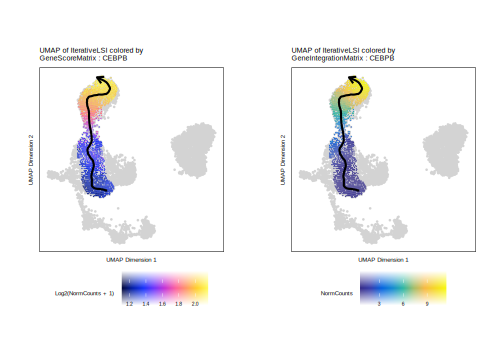
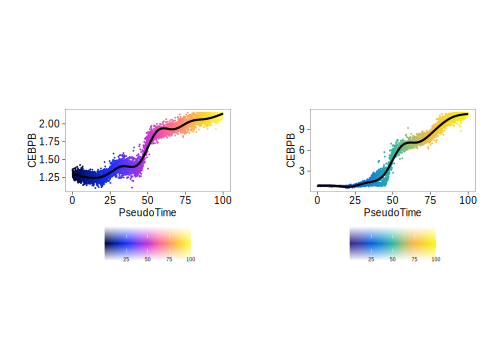
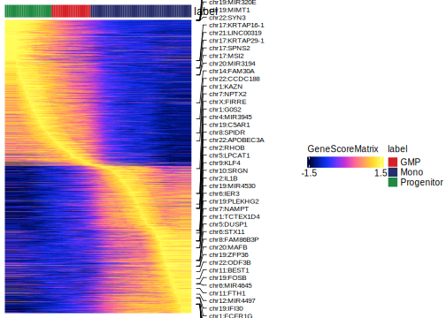
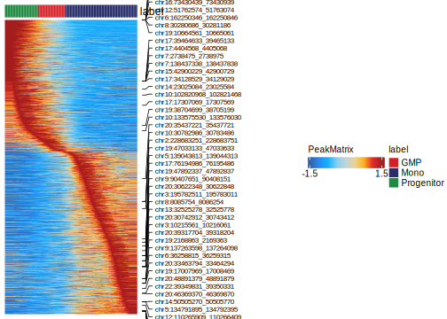

18.1 Myeloid Trajectory - Monocyte Differentiation
In this section, we will create a cellular trajectory that approximates the differentiation of HSCs into fully differentiated monocytes. To start, lets review the clusters and cell types that we defined previously, stored in cellColData in columns named “Clusters” and “Clusters2”. Overlaying these cell groupings on our UMAP embedding shows the different cell types that we are interested in.
p1 <- plotEmbedding(ArchRProj = projHeme5, colorBy = "cellColData", name = "Clusters", embedding = "UMAP")
## ArchR logging to : ArchRLogs/ArchR-plotEmbedding-1a132f55bc5-Date-2025-01-23_Time-22-58-43.732073.log
## If there is an issue, please report to github with logFile!
## Getting UMAP Embedding
## ColorBy = cellColData
## Plotting Embedding
## 1
## ArchR logging successful to : ArchRLogs/ArchR-plotEmbedding-1a132f55bc5-Date-2025-01-23_Time-22-58-43.732073.logp2 <- plotEmbedding(ArchRProj = projHeme5, colorBy = "cellColData", name = "Clusters2", embedding = "UMAP")
## ArchR logging to : ArchRLogs/ArchR-plotEmbedding-1a1482862d6-Date-2025-01-23_Time-22-58-43.431185.log
## If there is an issue, please report to github with logFile!
## Getting UMAP Embedding
## ColorBy = cellColData
## Plotting Embedding
## 1
## ArchR logging successful to : ArchRLogs/ArchR-plotEmbedding-1a1482862d6-Date-2025-01-23_Time-22-58-43.431185.log
18.1.1 Pseudo-time UMAPs and individual feature plots
We will use the cell type definitions that are stored in “Clusters2”. As mentioned above, we are creating a trajectory from stem cells (“Progenitor”), through the committed myeloid progenitor (“GMP”), to monocytes (“Mono”). The first step in creating a trajectory is to create a trajectory backbone in the form of an ordered vector of cell group labels.
We use the addTrajectory() function to create a trajectory and we add this to our ArchRProject. We will call this trajectory “MyeloidU”. What this does is it creates a new column in cellColData called “MyeloidU” that stores the pseudo-time value for each cell in the trajectory. Cells that are not part of the trajectory are labeled with NA.
projHeme5 <- addTrajectory(
ArchRProj = projHeme5,
name = "MyeloidU",
groupBy = "Clusters2",
trajectory = trajectory,
embedding = "UMAP",
force = TRUE
)
## ArchR logging to : ArchRLogs/ArchR-addTrajectory-1a16d6fe13b-Date-2025-01-23_Time-22-58-47.135262.log
## If there is an issue, please report to github with logFile!
## Filtering outliers
## Initial Alignment Before Spline Fit
## Spline Fit
## KNN to Spline
## ArchR logging successful to : ArchRLogs/ArchR-addTrajectory-1a16d6fe13b-Date-2025-01-23_Time-22-58-47.135262.logWe can look at this information and see that each cell has a unique pseudotime value between 0 and 100. We exclude cells with NA values because these are not part of the trajectory.
head(projHeme5$MyeloidU[!is.na(projHeme5$MyeloidU)])
## [1] 45.78870 50.93468 53.30813 45.51565 45.09557 47.88910To plot this trajectory, we use the plotTrajectory() function which overlays the pseudo-time values on our UMAP embedding and displays an arrow approximating the trajectory path from the spline-fit. Cells that are not part of the trajectory are colored gray. In this example, we use colorBy = "cellColData" to tell ArchR to look within cellColData for the column specified by name - in this case, the “MyeloidU” pseudo-time trajectory. While it may seem conterintuitive to list “MyeloidU” for both trajectory and name, this is done because trajectory tells ArchR which subset of cells we are interested in and name tells ArchR how to color that subset of cells.
p <- plotTrajectory(projHeme5, trajectory = "MyeloidU", colorBy = "cellColData", name = "MyeloidU")
## ArchR logging to : ArchRLogs/ArchR-plotTrajectory-1a170851752-Date-2025-01-23_Time-22-58-47.730191.log
## If there is an issue, please report to github with logFile!
## Plotting
## Plotting Trajectory
## Adding Inferred Arrow Trajectory to Plot
## ArchR logging successful to : ArchRLogs/ArchR-plotTrajectory-1a170851752-Date-2025-01-23_Time-22-58-47.730191.log
p[[1]]
## Warning: Removed 5489 rows containing non-finite outside the scale range
## (`stat_summary_hex()`).To save an editable vectorized version of this plot, we use plotPDF().
plotPDF(p, name = "Plot-MyeloidU-Traj-UMAP.pdf", ArchRProj = projHeme5, addDOC = FALSE, width = 5, height = 5)
## Plotting Ggplot!
## Plotting Ggplot!
## `geom_smooth()` using method = 'gam' and formula = 'y ~ s(x, bs = "cs")'
## `geom_smooth()` using method = 'gam' and formula = 'y ~ s(x, bs = "cs")'We can also overlay other features on the trajectory within our UMAP embedding. This allows us to display specific features only within the cells that are relevant to our trajectory.
If you have not already added impute weights to your projHeme5 project, lets do that now.
projHeme5 <- addImputeWeights(projHeme5)
## ArchR logging to : ArchRLogs/ArchR-addImputeWeights-1a116d130d-Date-2025-01-23_Time-22-58-59.087948.log
## If there is an issue, please report to github with logFile!
## 2025-01-23 22:58:59.516935 : Computing Impute Weights Using Magic (Cell 2018), 0 mins elapsed.Then, we can plot the “MyeloidU” trajectory but color the cells by the gene score value of the CEBPB gene, a known regulator of monocyte function that becomes active during the differentiation process. We indicate the matrix to use via the colorBy parameter and the feature to use via the name parameter.
p1 <- plotTrajectory(projHeme5, trajectory = "MyeloidU", colorBy = "GeneScoreMatrix", name = "CEBPB", continuousSet = "horizonExtra")
## Getting ImputeWeights
## ArchR logging to : ArchRLogs/ArchR-plotTrajectory-1a1ca51372-Date-2025-01-23_Time-22-59-11.114681.log
## If there is an issue, please report to github with logFile!
## Getting Matrix Values...
## 2025-01-23 22:59:12.983946 :
##
## Imputing Matrix
## Using weights on disk
## Using weights on disk
## Plotting
## Plotting Trajectory
## Adding Inferred Arrow Trajectory to Plot
## ArchR logging successful to : ArchRLogs/ArchR-plotTrajectory-1a1ca51372-Date-2025-01-23_Time-22-59-11.114681.logWe can repeat this process but color the cells by their linked gene expression via the GeneIntegrationMatrix.
p2 <- plotTrajectory(projHeme5, trajectory = "MyeloidU", colorBy = "GeneIntegrationMatrix", name = "CEBPB", continuousSet = "blueYellow")
## Getting ImputeWeights
## ArchR logging to : ArchRLogs/ArchR-plotTrajectory-1a1230e7a84-Date-2025-01-23_Time-22-59-22.606371.log
## If there is an issue, please report to github with logFile!
## Getting Matrix Values...
## 2025-01-23 22:59:24.499597 :
##
## Imputing Matrix
## Using weights on disk
## Using weights on disk
## Plotting
## Plotting Trajectory
## Adding Inferred Arrow Trajectory to Plot
## ArchR logging successful to : ArchRLogs/ArchR-plotTrajectory-1a1230e7a84-Date-2025-01-23_Time-22-59-22.606371.logThe plotTrajectory() function actually returns a list of relevant plots. The first plot in the list is a UMAP embedding, colorized as specified in the function call.
Comparing these UMAP plots side-by-side for the gene score and gene expression, we see that the activity of the CEBPB gene is highly specific to monocyte cells in the later part of the pseudo-time trajectory.
ggAlignPlots(p1[[1]], p2[[1]], type = "h")
## Warning: Removed 5489 rows containing non-finite outside the scale range (`stat_summary_hex()`).
## Removed 5489 rows containing non-finite outside the scale range (`stat_summary_hex()`).
The second plot in the list that is returned by plotTrajectory() is a dot plot of pseudo-time versus the value of the relevant feature, in this case, the gene score or gene expression of CEBPB. In this case, the cells are colored by their pseudo-time.
ggAlignPlots(p1[[2]], p2[[2]], type = "h")
## `geom_smooth()` using method = 'gam' and formula = 'y ~ s(x, bs = "cs")'
## `geom_smooth()` using method = 'gam' and formula = 'y ~ s(x, bs = "cs")'
18.1.2 Pseudo-time heatmaps
We can visualize changes in many features across pseudo-time using heatmaps. To do this, we first retrieve the trajectory of interest from the ArchRProject using the getTrajectory() function which returns the trajectory as a SummarizedExperiment object. We will create these pseudo-time heatmaps for motifs, gene scores, gene expression, and peak accessibility by passing the corresponding matrix to the useMatrix parameter. When calling getTrajectory() we can provide as argument to the trajectoryLabel parameter which allows for labeling of the heatmap pseudo-time bins based on the group (eg. stem cell, progenitor cell, differentiated cell). Typically, the value passed to trajectoryLabel should be the same as the column in cellColData used in the groupBy parameter when addTrajectory() was called.
trajMM <- getTrajectory(ArchRProj = projHeme5, name = "MyeloidU", useMatrix = "MotifMatrix", log2Norm = FALSE, trajectoryLabel = "Clusters2")
## Creating Trajectory Group Matrix..
## Some values are below 0, this could be a DeviationsMatrix in which scaleTo should be set = NULL.
## Continuing without depth normalization!
## Smoothing...
## Attempting to add labels to the trajectory based on the trajectoryLabel parameter.
trajMM
## class: SummarizedExperiment
## dim: 1740 100
## metadata(1): Params
## assays(2): smoothMat mat
## rownames(1740): deviations:TFAP2B_1 deviations:TFAP2D_2 ... z:TBX18_869
## z:TBX22_870
## rowData names(3): seqnames idx name
## colnames(100): T.0_1 T.1_2 ... T.98_99 T.99_100
## colData names(1): labelgetTrajectory() returns a Summarized Experiment where the rows are the features of interest and the columns are pseudo-time bins. The size of the pseudo-time bins can be controlled by the groupEvery parameter.
We then pass this SummarizedExperiment to the plotTrajectoryHeatmap() function. To include a color label across the top of the heatmap that represents the groups of the pseudo-time bins, we additionally use the colorColumns and columnPal arguments.
p1 <- plotTrajectoryHeatmap(trajMM, pal = paletteContinuous(set = "solarExtra"), colorColumns = TRUE, columnPal = paletteDiscrete(values = unique(colData(trajMM)$label)))
## ArchR logging to : ArchRLogs/ArchR-plotTrajectoryHeatmap-1a132086665-Date-2025-01-23_Time-22-59-52.991705.log
## If there is an issue, please report to github with logFile!
## useSeqnames is NULL or greater than 1 with a Sparse.Assays.Matrix trajectory input.
## 2025-01-23 22:59:53.433948 :
## force=FALSE thus continuing with subsetting useSeqnames = z
## 2025-01-23 22:59:53.439651 :
## Adding Annotations..
## Preparing Main Heatmap..
## 'magick' package is suggested to install to give better rasterization.
##
## Set `ht_opt$message = FALSE` to turn off this message.
## ArchR logging successful to : ArchRLogs/ArchR-plotTrajectoryHeatmap-1a132086665-Date-2025-01-23_Time-22-59-52.991705.log
p1We can perform the same steps to obtain a pseudo-time heatmap of gene scores by setting useMatrix = "GeneScoreMatrix".
trajGSM <- getTrajectory(ArchRProj = projHeme5, name = "MyeloidU", useMatrix = "GeneScoreMatrix", log2Norm = TRUE, trajectoryLabel = "Clusters2")
## Creating Trajectory Group Matrix..
## Smoothing...
## Attempting to add labels to the trajectory based on the trajectoryLabel parameter.
p2 <- plotTrajectoryHeatmap(trajGSM, pal = paletteContinuous(set = "horizonExtra"), colorColumns = TRUE, columnPal = paletteDiscrete(values = unique(colData(trajGSM)$label)))
## ArchR logging to : ArchRLogs/ArchR-plotTrajectoryHeatmap-1a144347802-Date-2025-01-23_Time-23-00-24.990618.log
## If there is an issue, please report to github with logFile!
## Adding Annotations..
## Preparing Main Heatmap..
## 'magick' package is suggested to install to give better rasterization.
##
## Set `ht_opt$message = FALSE` to turn off this message.
## ArchR logging successful to : ArchRLogs/ArchR-plotTrajectoryHeatmap-1a144347802-Date-2025-01-23_Time-23-00-24.990618.log
p2
Similarly, we can obtain a pseudo-time heatmap of gene expression by setting useMatrix = "GeneIntegrationMatrix".
trajGIM <- getTrajectory(ArchRProj = projHeme5, name = "MyeloidU", useMatrix = "GeneIntegrationMatrix", log2Norm = FALSE, trajectoryLabel = "Clusters2")
## Creating Trajectory Group Matrix..
## Smoothing...
## Attempting to add labels to the trajectory based on the trajectoryLabel parameter.
p3 <- plotTrajectoryHeatmap(trajGIM, pal = paletteContinuous(set = "blueYellow"), colorColumns = TRUE, columnPal = paletteDiscrete(values = unique(colData(trajGIM)$label)))
## ArchR logging to : ArchRLogs/ArchR-plotTrajectoryHeatmap-1a11c0597bd-Date-2025-01-23_Time-23-01-00.094507.log
## If there is an issue, please report to github with logFile!
## Adding Annotations..
## Preparing Main Heatmap..
## 'magick' package is suggested to install to give better rasterization.
##
## Set `ht_opt$message = FALSE` to turn off this message.
## ArchR logging successful to : ArchRLogs/ArchR-plotTrajectoryHeatmap-1a11c0597bd-Date-2025-01-23_Time-23-01-00.094507.log
p3Lastly, we can obtain a pseudo-time heatmap of peak accessibility by setting useMatrix = "PeakMatrix".
trajPM <- getTrajectory(ArchRProj = projHeme5, name = "MyeloidU", useMatrix = "PeakMatrix", log2Norm = TRUE, trajectoryLabel = "Clusters2")
## Creating Trajectory Group Matrix..
## Smoothing...
## Attempting to add labels to the trajectory based on the trajectoryLabel parameter.
p4 <- plotTrajectoryHeatmap(trajPM, pal = paletteContinuous(set = "solarExtra"), colorColumns = TRUE, columnPal = paletteDiscrete(values = unique(colData(trajPM)$label)))
## ArchR logging to : ArchRLogs/ArchR-plotTrajectoryHeatmap-1a153c1663f-Date-2025-01-23_Time-23-01-36.592654.log
## If there is an issue, please report to github with logFile!
## Adding Annotations..
## Preparing Main Heatmap..
## 'magick' package is suggested to install to give better rasterization.
##
## Set `ht_opt$message = FALSE` to turn off this message.
## ArchR logging successful to : ArchRLogs/ArchR-plotTrajectoryHeatmap-1a153c1663f-Date-2025-01-23_Time-23-01-36.592654.log
p4
To save an editable vectorized version of these plots, we use plotPDF().
18.1.3 Integrative pseudo-time analyses
We can also perform integrative analyses, such as identification of positive TF regulators by integration of gene scores / gene expression with motif accessibility across pseudo-time. This can be very powerful, for example in identifying drivers of differentiation. To do this, we use the correlateTrajectories() function which takes two SummarizedExperiment objects retrived from the getTrajectories() function.
First, lets find motifs whose accessibility across pseudo-time is correlated with the gene score of the TF gene. Since we are ultimately going to only correlate with the deviation z-scores, we filter out any entries that correlate based on raw deviations.
corGSM_MM <- correlateTrajectories(trajGSM, trajMM)
## ArchR logging to : ArchRLogs/ArchR-correlateTrajectories-1a1463c876b-Date-2025-01-23_Time-23-01-51.378291.log
## If there is an issue, please report to github with logFile!
## Found 37 Correlated Pairings!
## 2025-01-23 23:02:16.981642 :
idxToRemove <- grep(pattern = "deviations", x = corGSM_MM[["correlatedMappings"]]$name2)
if(length(idxToRemove > 1)){
corGSM_MM[["correlatedMappings"]] <- corGSM_MM[["correlatedMappings"]][-idxToRemove,]
}The primary output of correlateTrajectories() is a list object containing a DataFrame object as the first entry in the list. This DataFrame has columns named idx1, matchname1, name1, and VarAssay1 which correspond to the index, match name, unaltered name, and the variance quantile of the features from the first trajectory (gene scores) passed to the correlateTrajectories() function. A “variance quantile” is a normalized measure of the given feature which allows us to derive a correlation across disparate assays. This DataFrame contains all of the features that met the cutoffs specified in the correlateTrajectories() function.
corGSM_MM[["correlatedMappings"]]
## DataFrame with 36 rows and 12 columns
## idx1 idx2 matchname1 matchname2 name1 name2
## <integer> <integer> <character> <character> <character> <character>
## 1 82 1081 PRDM16 PRDM16 chr1:PRDM16 z:PRDM16_211
## 2 731 932 TAL1 TAL1 chr1:TAL1 z:TAL1_62
## 3 818 1013 JUN JUN chr1:JUN z:JUN_143
## 4 2034 1002 ATF3 ATF3 chr1:ATF3 z:ATF3_132
## 5 2369 1254 GATA3 GATA3 chr10:GATA3 z:GATA3_384
## ... ... ... ... ... ... ...
## 32 20780 1031 SNAI2 SNAI2 chr8:SNAI2 z:SNAI2_161
## 33 21658 1003 NFIL3 NFIL3 chr9:NFIL3 z:NFIL3_133
## 34 21753 1538 NR4A3 NR4A3 chr9:NR4A3 z:NR4A3_668
## 35 21793 1078 KLF4 KLF4 chr9:KLF4 z:KLF4_208
## 36 22097 1565 RXRA RXRA chr9:RXRA z:RXRA_695
## Correlation VarAssay1 VarAssay2 TStat Pval FDR
## <numeric> <numeric> <numeric> <numeric> <numeric> <numeric>
## 1 0.823885 0.999784 0.867816 14.39074 6.60993e-26 3.60461e-23
## 2 0.767083 0.854153 0.988506 11.83658 1.33614e-20 1.36620e-18
## 3 0.513806 0.993990 0.967816 5.92887 4.57253e-08 4.64637e-07
## 4 0.745960 0.983310 0.909195 11.08817 5.35814e-19 4.17424e-17
## 5 0.678372 0.849094 0.995402 9.14028 8.88548e-15 3.23140e-13
## ... ... ... ... ... ... ...
## 32 0.618889 0.869503 0.960345 7.79994 6.76130e-12 1.40773e-10
## 33 0.756083 0.993125 0.938506 11.43640 9.57196e-20 8.24196e-18
## 34 0.575115 0.815454 0.943103 6.95946 3.89654e-10 5.95771e-09
## 35 0.802777 0.998833 0.822414 13.32779 9.82524e-24 3.21482e-21
## 36 0.605137 0.912224 0.922414 7.52468 2.58286e-11 4.54360e-10We can then subset our corresponding trajectory SummarizedExperiment objects to only contain the elements that passed significance above.
trajGSM2 <- trajGSM[corGSM_MM[["correlatedMappings"]]$name1, ]
trajMM2 <- trajMM[corGSM_MM[["correlatedMappings"]]$name2, ]To best order these features, we can create a new trajectory where the values of these two trajectories are multiplied. This will allow us to create side-by-side heatmaps that are identically ordered by row.
trajCombined <- trajGSM2
assay(trajCombined, withDimnames=FALSE) <- t(apply(assay(trajGSM2), 1, scale)) + t(apply(assay(trajMM2), 1, scale))We can extract the optimal row order from the return of the plotTrajectoryHeatmap() function.
combinedMat <- plotTrajectoryHeatmap(trajCombined, returnMat = TRUE, varCutOff = 0)
## ArchR logging to : ArchRLogs/ArchR-plotTrajectoryHeatmap-1a178df97f6-Date-2025-01-23_Time-23-02-17.106555.log
## If there is an issue, please report to github with logFile!
## Preparing Main Heatmap..
## 'magick' package is suggested to install to give better rasterization.
##
## Set `ht_opt$message = FALSE` to turn off this message.
## ArchR logging successful to : ArchRLogs/ArchR-plotTrajectoryHeatmap-1a178df97f6-Date-2025-01-23_Time-23-02-17.106555.log
rowOrder <- match(rownames(combinedMat), rownames(trajGSM2))With this, we are now ready to create our paired heatmaps. First, we will create the heatmap for the gene score trajectory. We specify the desired row order via the rowOrder parameter.
ht1 <- plotTrajectoryHeatmap(trajGSM2, pal = paletteContinuous(set = "horizonExtra"), varCutOff = 0, rowOrder = rowOrder)
## ArchR logging to : ArchRLogs/ArchR-plotTrajectoryHeatmap-1a128f5a08d-Date-2025-01-23_Time-23-02-17.886399.log
## If there is an issue, please report to github with logFile!
## Preparing Main Heatmap..
## 'magick' package is suggested to install to give better rasterization.
##
## Set `ht_opt$message = FALSE` to turn off this message.
## ArchR logging successful to : ArchRLogs/ArchR-plotTrajectoryHeatmap-1a128f5a08d-Date-2025-01-23_Time-23-02-17.886399.logThen, we will create the heatmap for the motif trajectory, again specifying the row order via the rowOrder parameter. Here, we’ve used force = TRUE. In the context of the MotifMatrix trajectory, this would allow correlations to both “z” and “deviations”. In this example, we’ve removed the raw deviations above but if we had not done this, force = TRUE would be essential here.
ht2 <- plotTrajectoryHeatmap(trajMM2, pal = paletteContinuous(set = "solarExtra"), varCutOff = 0, rowOrder = rowOrder, force = TRUE)
## ArchR logging to : ArchRLogs/ArchR-plotTrajectoryHeatmap-1a158cec56b-Date-2025-01-23_Time-23-02-18.720545.log
## If there is an issue, please report to github with logFile!
## useSeqnames is NULL or greater than 1 with a Sparse.Assays.Matrix trajectory input.
## 2025-01-23 23:02:19.157776 :
## force=TRUE thus continuing
## 2025-01-23 23:02:19.163134 :
## Preparing Main Heatmap..
## 'magick' package is suggested to install to give better rasterization.
##
## Set `ht_opt$message = FALSE` to turn off this message.
## ArchR logging successful to : ArchRLogs/ArchR-plotTrajectoryHeatmap-1a158cec56b-Date-2025-01-23_Time-23-02-18.720545.logPlotting these two heatmaps side-by-side, we see that the rows are matched across the two heatmaps. You may notice that the analysis captures both GATA3 and GATA3-AS1 (an anti-sense transcript of GATA3). This is due to how feature matching is performed and the anti-sense transcript entry could be removed manually in post-processing or programatically if desired.
We can repeat this same exact process but use gene expression from the GeneIntegrationMatrix instead of gene scores. Because this is the same analytical workflow, we do not repeat our explanations for each step.
corGIM_MM <- correlateTrajectories(trajGIM, trajMM)
## ArchR logging to : ArchRLogs/ArchR-correlateTrajectories-1a113a08deb-Date-2025-01-23_Time-23-02-20.7674.log
## If there is an issue, please report to github with logFile!
## Found 48 Correlated Pairings!
## 2025-01-23 23:02:40.570334 :
idxToRemove2 <- grep(pattern = "deviations", x = corGIM_MM[["correlatedMappings"]]$name2)
if(length(idxToRemove2 > 1)){
corGIM_MM[["correlatedMappings"]] <- corGIM_MM[["correlatedMappings"]][-idxToRemove2,]
}
corGIM_MM[[1]]
## DataFrame with 47 rows and 12 columns
## idx1 idx2 matchname1 matchname2 name1 name2
## <integer> <integer> <character> <character> <character> <character>
## 1 295 1601 RUNX3 RUNX3 chr1:RUNX3 z:RUNX3_731
## 2 680 1612 NFIA NFIA chr1:NFIA z:NFIA_742
## 3 1227 1512 MEF2D MEF2D chr1:MEF2D z:MEF2D_642
## 4 1936 1254 GATA3 GATA3 chr10:GATA3 z:GATA3_384
## 5 2036 1027 ZEB1 ZEB1 chr10:ZEB1 z:ZEB1_157
## ... ... ... ... ... ... ...
## 43 15859 997 CREB5 CREB5 chr7:CREB5 z:CREB5_127
## 44 16783 1022 CEBPD CEBPD chr8:CEBPD z:CEBPD_152
## 45 17463 1003 NFIL3 NFIL3 chr9:NFIL3 z:NFIL3_133
## 46 17560 1078 KLF4 KLF4 chr9:KLF4 z:KLF4_208
## 47 17803 1565 RXRA RXRA chr9:RXRA z:RXRA_695
## Correlation VarAssay1 VarAssay2 TStat Pval FDR
## <numeric> <numeric> <numeric> <numeric> <numeric> <numeric>
## 1 0.859304 0.836944 0.990805 16.6320 2.71340e-30 6.94894e-29
## 2 0.871016 0.843718 0.935057 17.5522 5.15150e-32 1.93181e-30
## 3 0.786838 0.852642 0.897126 12.6212 2.92156e-22 2.86695e-21
## 4 0.874051 0.811247 0.995402 17.8099 1.73053e-32 6.98866e-31
## 5 0.869930 0.825439 0.906897 17.4621 7.55989e-32 2.48059e-30
## ... ... ... ... ... ... ...
## 43 0.840645 0.938552 0.913218 15.3659 7.55559e-28 1.46914e-26
## 44 0.844978 0.993871 0.998851 15.6411 2.18504e-28 4.41210e-27
## 45 0.790844 0.920219 0.938506 12.7921 1.28056e-22 1.29288e-21
## 46 0.822718 0.987904 0.822414 14.3276 8.86608e-26 1.29297e-24
## 47 0.913108 0.952207 0.922414 22.1705 5.74331e-40 6.70053e-38
trajGIM2 <- trajGIM[corGIM_MM[[1]]$name1, ]
trajMM2 <- trajMM[corGIM_MM[[1]]$name2, ]
trajCombined <- trajGIM2
assay(trajCombined, withDimnames=FALSE) <- t(apply(assay(trajGIM2), 1, scale)) + t(apply(assay(trajMM2), 1, scale))
combinedMat <- plotTrajectoryHeatmap(trajCombined, returnMat = TRUE, varCutOff = 0)
## ArchR logging to : ArchRLogs/ArchR-plotTrajectoryHeatmap-1a12e8f5e72-Date-2025-01-23_Time-23-02-40.669212.log
## If there is an issue, please report to github with logFile!
## Preparing Main Heatmap..
## 'magick' package is suggested to install to give better rasterization.
##
## Set `ht_opt$message = FALSE` to turn off this message.
## ArchR logging successful to : ArchRLogs/ArchR-plotTrajectoryHeatmap-1a12e8f5e72-Date-2025-01-23_Time-23-02-40.669212.log
rowOrder <- match(rownames(combinedMat), rownames(trajGIM2))
ht1 <- plotTrajectoryHeatmap(trajGIM2, pal = paletteContinuous(set = "blueYellow"), varCutOff = 0, rowOrder = rowOrder)
## ArchR logging to : ArchRLogs/ArchR-plotTrajectoryHeatmap-1a16419c5b6-Date-2025-01-23_Time-23-02-41.556605.log
## If there is an issue, please report to github with logFile!
## Preparing Main Heatmap..
## 'magick' package is suggested to install to give better rasterization.
##
## Set `ht_opt$message = FALSE` to turn off this message.
## ArchR logging successful to : ArchRLogs/ArchR-plotTrajectoryHeatmap-1a16419c5b6-Date-2025-01-23_Time-23-02-41.556605.log
ht2 <- plotTrajectoryHeatmap(trajMM2, pal = paletteContinuous(set = "solarExtra"), varCutOff = 0, rowOrder = rowOrder)
## ArchR logging to : ArchRLogs/ArchR-plotTrajectoryHeatmap-1a15047f94d-Date-2025-01-23_Time-23-02-42.363541.log
## If there is an issue, please report to github with logFile!
## useSeqnames is NULL or greater than 1 with a Sparse.Assays.Matrix trajectory input.
## 2025-01-23 23:02:42.79622 :
## force=FALSE thus continuing with subsetting useSeqnames = z
## 2025-01-23 23:02:42.803192 :
## Preparing Main Heatmap..
## 'magick' package is suggested to install to give better rasterization.
##
## Set `ht_opt$message = FALSE` to turn off this message.
## ArchR logging successful to : ArchRLogs/ArchR-plotTrajectoryHeatmap-1a15047f94d-Date-2025-01-23_Time-23-02-42.363541.log
ComplexHeatmap::draw(ht1 + ht2)